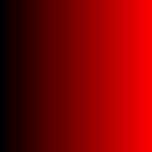
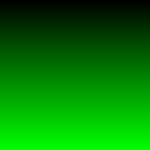
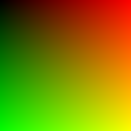
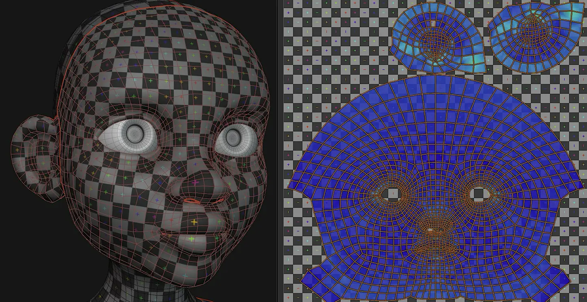
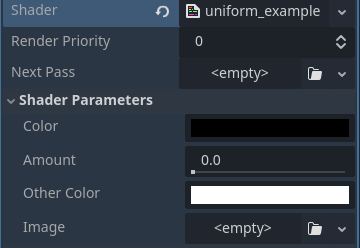
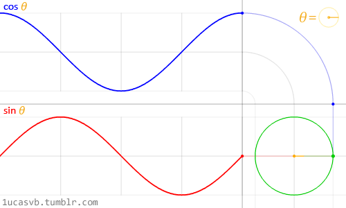
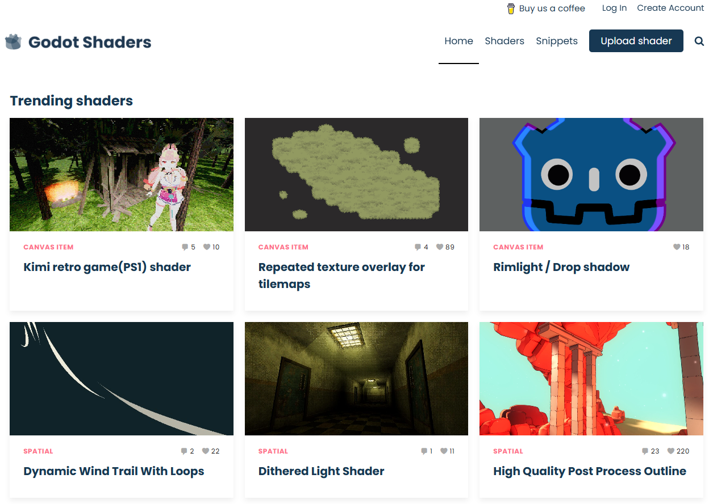

Yannik Brändle - SoSe26
TH Bingen
GDShader basiert sehr stark auf
GLSL (OpenGL Shader language)
CCompute-Shader → für hochparallele Berechnungen auf GPU(Aufgabe des Compute Shaders ist die Bewegung)
extends Sprite2D
func _ready():
var img := Image.create(255,255, false, Image.FORMAT_RGBA8)
for y in range(255):
for x in range(255):
img.set_pixel(x,y, Color(x/254.0, y/254.0, 0))
var tex := ImageTexture.create_from_image(img)
texture = tex
img.save_png("res://xy_demo.png")
0 Schwarz, 1 Farbe



Eine "UV Map" ist ein mapping von 0-1 position in zwei dimensionen auf einem Mesh
Ein Weg eine 2D Textur auf ein 3D Model zu legen

https://developer.blender.org/docs/release_notes/4.3/modeling/
GDShader
shader_type canvas_item;
void fragment() {
COLOR = vec4(UV.x, UV.y, 0, 1.0);
}
UV.x und
UV.y Koordinaten gemapped
Viewports, nicht der
Texture
shader_type canvas_item;
void vertex() {
// Called for every vertex the material is visible on.
}
void fragment() {
// Called for every pixel the material is visible on.
}
void light() {
// Called for every pixel for every light affecting the CanvasItem.
// Uncomment to replace the default light processing function with this one.
}
uniform - Shader Parameter
shader_type canvas_item;
uniform vec4 color : source_color;
uniform float amount : hint_range(0, 1);
uniform vec4 other_color : source_color = vec4(1.0); // Default values go after the hint.
uniform sampler2D image : source_color;
↓

https://docs.godotengine.org/en/stable/tutorials/shaders/shader_reference/shading_language.html
// gdshader
shader_type canvas_item;
uniform vec4 color : source_color;
uniform float amount : hint_range(0, 1);
uniform vec4 other_color : source_color = vec4(1.0); // Default values go after the hint.
uniform sampler2D image : source_color;
↓
# gdscript
var mat: ShaderMaterial = external_mat
mat.set_shader_parameter("color", Color.RED)
mat.set_shader_parameter("amount", 0.73)
mat.set_shader_parameter("other_color", Color.BLUE)
mat.set_shader_parameter("image", my_image)

shader_type canvas_item;
uniform float wave_frequency = 10.0;
uniform float wave_speed = 5.0;
uniform float wave_amplitude = 0.01;
void fragment() {
float wave_x = sin(UV.x * wave_frequency + TIME * wave_speed) * wave_amplitude - wave_amplitude;
float wave_y = cos(UV.y * wave_frequency + TIME * wave_speed) * wave_amplitude - wave_amplitude;
vec2 wave_uv = UV + vec2(wave_x, wave_y);
COLOR = texture(TEXTURE, wave_uv);
}
sin & cos
sin & sin
shader_type canvas_item;
uniform vec4 target_color : source_color = vec4(0.7, 0.0, 0.0, 1.0);
void fragment() {
vec4 current_pixel = texture(TEXTURE, UV);
if(current_pixel.r > (current_pixel.b + current_pixel.g) * 0.5)
{
current_pixel = target_color;
}
COLOR = current_pixel;
}
shader_type canvas_item;
const float max_red_value = 190.0 / 255.0;
uniform vec4 target_color : source_color = vec4(0.7, 0.0, 0.0, 1.0);
void fragment() {
vec4 current_pixel = texture(TEXTURE, UV);
// check if pixel is primarily red coloured
if(current_pixel.r > (current_pixel.b + current_pixel.g) * 0.5)
{
// divide by 190 (converted from 255 to 1.0 value), ca highest red value of the original images
float mult = current_pixel.r / max_red_value;
// check how close the colors are to approximate blending between colors
float diff_g = current_pixel.g / current_pixel.r;
// get min value of current color to adjust blending target
float avg_val = (current_pixel.r + current_pixel.g + current_pixel.b) / 3.0;
// adapt target color to actual pixel color
current_pixel.rgb = target_color.rgb * mult + (vec3(avg_val) - target_color.rgb * mult) * diff_g;
}
COLOR = current_pixel;
}
shader_type spatial;
uniform float wobble_speed : hint_range(0.1, 10.0) = 1.0;
uniform float wobble_amplitude : hint_range(0.01, 0.5) = 0.1;
void vertex() {
// Calculate the distance from the center of the sphere
float distance_from_center = length(VERTEX);
// Calculate the wobble factor using a sine function
float wobble_factor = sin(TIME * wobble_speed + VERTEX.x * 5.0) * wobble_amplitude;
// Apply the wobble factor to the vertex position
VERTEX.y += wobble_factor * distance_from_center;
VERTEX.z += wobble_factor * distance_from_center;
}
void fragment() {
// Simple fragment shader to render the sphere
ALBEDO = vec3(0.0, 0.5, 1.0); // Blue color
}
shader_type spatial;
uniform float pulse_speed : hint_range(0.1, 10.0) = 1.0;
uniform float pulse_amplitude : hint_range(0.01, 1.0) = 0.5;
uniform float scroll_speed : hint_range(0.1, 10.0) = 1.0;
void fragment() {
// Offset the pulse factor by VERTEX.x position for a wave-like effect
float offset_pulse = sin(TIME * pulse_speed + VERTEX.x * scroll_speed) * 0.5 + 0.5;
// Apply the offset pulse factor to the alpha
ALPHA = offset_pulse * pulse_amplitude;
ALBEDO = vec3(0.0, 0.5, 1.0); // Blue color
}
